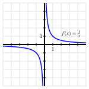

How can derivatives be used to help us evaluate indeterminate limits of the form \(\frac{0}{0}\text{?}\)
What does it mean to say that \(\lim_{x \to \infty} f(x) = L\) and \(\lim_{x \to a} f(x) = \infty\text{?}\)
How can derivatives assist us in evaluating indeterminate limits of the form \(\frac{\infty}{\infty}\text{?}\)
Because differential calculus is based on the definition of the derivative, and the definition of the derivative involves a limit, there is a sense in which all of calculus rests on limits. In addition, the limit involved in the definition of the derivative always generates the indeterminate form \(\frac{0}{0}\text{.}\) If \(f\) is a differentiable function, then in the definition
not only does \(h \to 0\) in the denominator, but also \((f(x+h)-f(x)) \to 0\) in the numerator, since \(f\) is continuous. Remember, saying that a limit has an indeterminate form only means that we don't yet know its value and have more work to do: indeed, limits of the form \(\frac{0}{0}\) can take on any value, as is evidenced by evaluating \(f'(x)\) for varying values of \(x\) for a function such as \(f'(x) = x^2\text{.}\)
We have learned many techniques for evaluating the limits that result from the derivative definition, including a large number of shortcut rules. In this section, we turn the situation upside-down: instead of using limits to evaluate derivatives, we explore how to use derivatives to evaluate certain limits.
Preview Activity2.8.1.
Let \(h\) be the function given by \(h(x) = \frac{x^5 + x - 2}{x^2 - 1}\text{.}\)
What is the domain of \(h\text{?}\)
Explain why \(\displaystyle\lim_{x \to 1} \frac{x^5 + x - 2}{x^2 - 1}\) results in an indeterminate form.
Next we will investigate the behavior of both the numerator and denominator of \(h\) near the point where \(x = 1\text{.}\) Let \(f(x) = x^5 + x - 2\) and \(g(x) = x^2 - 1\text{.}\) Find the local linearizations of \(f\) and \(g\) at \(a = 1\text{,}\) and call these functions \(L_f(x)\) and \(L_g(x)\text{,}\) respectively.
Explain why \(h(x) \approx \frac{L_f(x)}{L_g(x)}\) for \(x\) near \(a = 1\text{.}\)
What do you think your result tells us about \(\lim_{x \to 1} h(x)\text{?}\)
Investigate the function \(h(x)\) graphically and numerically near \(x = 1\text{.}\) What do you think is the value of \(\lim_{x \to 1} h(x)\text{?}\)
Subsection2.8.1Using derivatives to evaluate indeterminate limits of the form \(\frac{0}{0}\text{.}\)
Figure2.8.1.At left, the graphs of \(f\) and \(g\) near the value \(a\text{,}\) along with their tangent line approximations \(L_f\) and \(L_g\) at \(x = a\text{.}\) At right, zooming in on the point \(a\) and the four graphs.
The idea demonstrated in Preview Activity 2.8.1 — that we can evaluate an indeterminate limit of the form \(\frac{0}{0}\) by replacing each of the numerator and denominator with their local linearizations at the point of interest — can be generalized in a way that enables us to evaluate a wide range of limits. We have a function \(h(x)\) that can be written as a quotient \(h(x) = \frac{f(x)}{g(x)}\text{,}\) where \(f\) and \(g\) are both differentiable at \(x=a\) and for which \(f(a) = g(a) = 0\text{.}\) We would like to evaluate the indeterminate limit given by \(\lim_{x \to a} h(x)\text{.}\)Figure 2.8.1 illustrates the situation. We see that both \(f\) and \(g\) have an \(x\)-intercept at \(x = a\text{.}\) Their respective tangent line approximations \(L_f\) and \(L_g\) at \(x = a\) are also shown in the figure. We can take advantage of the fact that a function and its tangent line approximation become indistinguishable as \(x \to a\text{.}\)
First, let's recall that \(L_f(x) = f'(a)(x-a) + f(a)\) and \(L_g(x) = g'(a)(x-a) +g(a)\text{.}\) Because \(x\) is getting arbitrarily close to \(a\) when we take the limit, we can replace \(f\) with \(L_f\) and replace \(g\) with \(L_g\text{,}\) and thus we observe that
Next, we remember that both \(f(a) = 0\) and \(g(a) = 0\text{,}\) which is precisely what makes the original limit indeterminate. Substituting these values for \(f(a)\) and \(g(a)\) in the limit above, we now have
where the latter equality holds because \(\frac{x-a}{x-a} = 1\) when \(x\) is approaching (but not equal to) \(a\text{.}\) Finally, we note that \(\frac{f'(a)}{g'(a)}\) is constant with respect to \(x\text{,}\) and thus
This result holds as long as \(g'(a)\) is not equal to zero. The formal name of the result is L'Hôpital's Rule.
L'Hôpital's Rule.
Let \(f\) and \(g\) be differentiable at \(x=a\text{,}\) and suppose that \(f(a) = g(a) = 0\) and that \(g'(a) \neq 0\text{.}\) Then \(\lim_{x \to a} \frac{f(x)}{g(x)} = \frac{f'(a)}{g'(a)}\text{.}\)
In practice, we typically work with a slightly more general version of L'Hôpital's Rule, which states that (under the identical assumptions as the boxed rule above and the extra assumption that \(g'\) is continuous at \(x=a\))
provided the righthand limit exists. This form reflects the basic idea of L'Hôpital's Rule: if \(\frac{f(x)}{g(x)}\) produces an indeterminate limit of form \(\frac{0}{0}\) as \(x \to a\text{,}\) that limit is equivalent to the limit of the quotient of the two functions' derivatives, \(\frac{f'(x)}{g'(x)}\text{.}\)
By replacing the numerator and denominator with their respective derivatives, we often replace an indeterminate limit with one whose value we can easily determine.
Activity2.8.2.
Evaluate each of the following limits. If you use L'Hôpital's Rule, indicate where it was used, and be certain its hypotheses are met before you apply it.
Note that \(x \to \pi\text{,}\) not \(x \to 0\text{.}\)
Observe that \(e^{x-1} \to 1\) as \(x \to 1\text{.}\)
If necessary, L'Hôpital's Rule can be applied more than once.
While L'Hôpital's Rule can be applied in an entirely algebraic way, it is important to remember that the justification of the rule is graphical: the main idea is that the slopes of the tangent lines to \(f\) and \(g\) at \(x = a\) determine the value of the limit of \(\frac{f(x)}{g(x)}\) as \(x \to a\text{.}\)
Figure2.8.2.Two functions \(f\) and \(g\) that satisfy L'Hôpital's Rule.
We see this in Figure 2.8.2, where we can see from the grid that \(f'(a) = 2\) and \(g'(a) = -1\text{,}\) hence by L'Hôpital's Rule,
It's not the fact that \(f\) and \(g\) both approach zero that matters most, but rather the rate at which each approaches zero that determines the value of the limit. This is a good way to remember what L'Hôpital's Rule says: if \(f(a) = g(a) = 0\text{,}\) the the limit of \(\frac{f(x)}{g(x)}\) as \(x \to a\) is given by the ratio of the slopes of \(f\) and \(g\) at \(x = a\text{.}\)
Activity2.8.3.
In this activity, we reason graphically from the following figure to evaluate limits of ratios of functions about which some information is known.
Figure2.8.3.Three graphs referenced in the questions of Activity 2.8.3.
Use the left-hand graph to determine the values of \(f(2)\text{,}\)\(f'(2)\text{,}\)\(g(2)\text{,}\) and \(g'(2)\text{.}\) Then, evaluate \(\lim\limits_{x \to 2} \frac{f(x)}{g(x)}\text{.}\)
Use the middle graph to find \(p(2)\text{,}\)\(p'(2)\text{,}\)\(q(2)\text{,}\) and \(q'(2)\text{.}\) Then, determine the value of \(\lim\limits_{x \to 2} \frac{p(x)}{q(x)}\text{.}\)
Assume that \(r\) and \(s\) are functions whose for which \(r''(2) \ne 0\) and \(s''(2) \ne 0\) Use the right-hand graph to compute \(r(2)\text{,}\)\(r'(2)\text{,}\)\(s(2)\text{,}\)\(s'(2)\text{.}\) Explain why you cannot determine the exact value of \(\lim\limits_{x \to 2} \frac{r(x)}{s(x)}\) without further information being provided, but that you can determine the sign of \(\lim\limits_{x \to 2} \frac{r(x)}{s(x)}\text{.}\) In addition, state what the sign of the limit will be, with justification.
Don't forget that \(f'(a)\) measures the slope of the tangent line to \(y = f(x)\) at the point \((a,f(a))\text{.}\)
Do the functions \(p\) and \(q\) meet the criteria of L'Hôpital's Rule?
Remember that L'Hôpital's Rule can be applied more than once to a particular limit.
Subsection2.8.2Limits involving \(\infty\)
The concept of infinity, denoted \(\infty\text{,}\) arises naturally in calculus, as it does in much of mathematics. It is important to note from the outset that \(\infty\) is a concept, but not a number itself. Indeed, the notion of \(\infty\) naturally invokes the idea of limits. Consider, for example, the function \(f(x) = \frac{1}{x}\text{,}\) whose graph is pictured in Figure 2.8.4.
We note that \(x = 0\) is not in the domain of \(f\text{,}\) so we may naturally wonder what happens as \(x \to 0\text{.}\) As \(x \to 0^+\text{,}\) we observe that \(f(x)\)increases without bound. That is, we can make the value of \(f(x)\) as large as we like by taking \(x\) closer and closer (but not equal) to 0, while keeping \(x \gt 0\text{.}\) This is a good way to think about what infinity represents: a quantity is tending to infinity if there is no single number that the quantity is always less than.

Figure2.8.4.The graph of \(f(x) = \frac{1}{x}\text{.}\)
Recall that the statement \(\lim_{x \to a} f(x) = L\text{,}\) means that we can make \(f(x)\) as close to \(L\) as we'd like by taking \(x\) sufficiently close (but not equal) to \(a\text{.}\) We now expand this notation and language to include the possibility that either \(L\) or \(a\) can be \(\infty\text{.}\) For instance, for \(f(x) = \frac{1}{x}\text{,}\) we now write
by which we mean that we can make \(\frac{1}{x}\) as large as we like by taking \(x\) sufficiently close (but not equal) to 0. In a similar way, we write
since we can make \(\frac{1}{x}\) as close to 0 as we'd like by taking \(x\) sufficiently large (i.e., by letting \(x\) increase without bound).
In general, the notation \(\lim_{x \to a} f(x) = \infty\) means that we can make \(f(x)\) as large as we like by taking \(x\) sufficiently close (but not equal) to \(a\text{,}\) and the notation \(\lim_{x \to \infty} f(x) = L\) means that we can make \(f(x)\) as close to \(L\) as we like by taking \(x\) sufficiently large. This notation also applies to left- and right-hand limits, and to limits involving \(-\infty\text{.}\) For example, returning to Figure 2.8.4 and \(f(x) = \frac{1}{x}\text{,}\) we can say that
Limits involving infinity identify vertical and horizontal asymptotes of a function. If \(\lim_{x \to a} f(x) = \infty\text{,}\) then \(x = a\) is a vertical asymptote of \(f\text{,}\) while if \(\lim_{x \to \infty} f(x) = L\text{,}\) then \(y = L\) is a horizontal asymptote of \(f\text{.}\) Similar statements can be made using \(-\infty\text{,}\) and with left- and right-hand limits as \(x \to a^-\) or \(x \to a^+\text{.}\)
In precalculus classes, it is common to study the end behavior of certain families of functions, by which we mean the behavior of a function as \(x \to \infty\) and as \(x \to -\infty\text{.}\) Here we briefly examine some familiar functions and note the values of several limits involving \(\infty\text{.}\)
Figure2.8.5.Graphs of some familiar functions whose end behavior as \(x \to \pm \infty\) is known. In the middle graph, \(f(x) = x^3 - 16x\) and \(g(x) = x^4 - 16x^2 - 8\text{.}\)
For the natural exponential function \(e^x\text{,}\) we note that \(\lim_{x \to \infty} e^x = \infty\) and \(\lim_{x \to -\infty} e^x = 0\text{.}\) For the exponential decay function \(e^{-x}\text{,}\) these limits are reversed, with \(\lim_{x \to \infty} e^{-x} = 0\) and \(\lim_{x \to -\infty} e^{-x} = \infty\text{.}\) Turning to the natural logarithm function, we have \(\lim_{x \to 0^+} \ln(x) = -\infty\) and \(\lim_{x \to \infty} \ln(x) = \infty\text{.}\) While both \(e^x\) and \(\ln(x)\) grow without bound as \(x \to \infty\text{,}\) the exponential function does so much more quickly than the logarithm function does. We'll soon use limits to quantify what we mean by “quickly.”
the end behavior depends on the sign of \(a_n\) and whether the highest power \(n\) is even or odd. If \(n\) is even and \(a_n\) is positive, then \(\lim_{x \to \infty} p(x) = \infty\) and \(\lim_{x \to -\infty} p(x) = \infty\text{,}\) as in the plot of \(g\) in Figure 2.8.5. If instead \(a_n\) is negative, then \(\lim_{x \to \infty} p(x) = -\infty\) and \(\lim_{x \to -\infty} p(x) = -\infty\text{.}\) In the situation where \(n\) is odd, then either \(\lim_{x \to \infty} p(x) = \infty\) and \(\lim_{x \to -\infty} p(x) = -\infty\) (which occurs when \(a_n\) is positive, as in the graph of \(f\) in Figure 2.8.5), or \(\lim_{x \to \infty} p(x) = -\infty\) and \(\lim_{x \to -\infty} p(x) = \infty\) (when \(a_n\) is negative).
A function can fail to have a limit as \(x \to \infty\text{.}\) For example, consider the plot of the sine function at right in Figure 2.8.5. Because the function continues oscillating between \(-1\) and \(1\) as \(x \to \infty\text{,}\) we say that \(\lim_{x \to \infty} \sin(x)\) does not exist.
Finally, it is straightforward to analyze the behavior of any rational function as \(x \to \infty\text{.}\)
Note that both \((3x^2 - 4x + 5) \to \infty\) as \(x \to \infty\) and \((7x^2 + 9x - 10) \to \infty\) as \(x \to \infty\text{.}\) Here we say that \(\lim_{x \to \infty} q(x)\) has indeterminate form \(\frac{\infty}{\infty}\text{.}\) We can determine the value of this limit through a standard algebraic approach. Multiplying the numerator and denominator each by \(\frac{1}{x^2}\text{,}\) we find that
since \(\frac{1}{x^2} \to 0\) and \(\frac{1}{x} \to 0\) as \(x \to \infty\text{.}\) This shows that the rational function \(q\) has a horizontal asymptote at \(y = \frac{3}{7}\text{.}\) A similar approach can be used to determine the limit of any rational function as \(x \to \infty\text{.}\)
Here, both \(x^2 \to \infty\) and \(e^x \to \infty\text{,}\) but there is not an obvious algebraic approach that enables us to find the limit's value. Fortunately, it turns out that L'Hôpital's Rule extends to cases involving infinity.
L'Hôpital's Rule (\(\infty\)).
If \(f\) and \(g\) are differentiable and both approach zero or both approach \(\pm \infty\) as \(x \to a\) (where \(a\) is allowed to be \(\infty\)) , then
(To be technically correct, we need to add the additional hypothesis that \(g'(x) \ne 0\) on an open interval that contains \(a\) or in every neighborhood of infinity if \(a\) is \(\infty\text{;}\) this is almost always met in practice.)
To evaluate \(\lim_{x \to \infty} \frac{x^2}{e^x}\text{,}\) we can apply L'Hôpital's Rule, since both \(x^2 \to \infty\) and \(e^x \to \infty\text{.}\) Doing so, it follows that
This updated limit is still indeterminate and of the form \(\frac{\infty}{\infty}\text{,}\) but it is simpler since \(2x\) has replaced \(x^2\text{.}\) Hence, we can apply L'Hôpital's Rule again, and find that
Now, since \(2\) is constant and \(e^x \to \infty\) as \(x \to \infty\text{,}\) it follows that \(\frac{2}{e^x} \to 0\) as \(x \to \infty\text{,}\) which shows that
Evaluate each of the following limits. If you use L'Hôpital's Rule, indicate where it was used, and be certain its hypotheses are met before you apply it.
Remember that \(\ln(x) \to \infty\) as \(x \to infty\text{.}\)
Both the numerator and denominator tend to \(\infty\) as \(x \to \infty\text{.}\)
Note that \(x \to 0^+\text{,}\) not \(\infty\text{.}\)
As \(x \to \frac{\pi}{2}^-\text{,}\)\(\tan(x) \to \infty\text{.}\)
Observe that \(e^{-x} = \frac{1}{e^x}\text{.}\)
To evaluate the limit of a quotient of two functions \(\frac{f(x)}{g(x)}\) that results in an indeterminate form of \(\frac{\infty}{\infty}\text{,}\) in essence we are asking which function is growing faster without bound. We say that the function \(g\)dominates the function \(f\) as \(x \to \infty\) provided that
whereas \(f\) dominates \(g\) provided that \(\lim_{x \to \infty} \frac{f(x)}{g(x)} = \infty\text{.}\) Finally, if the value of \(\lim_{x \to \infty} \frac{f(x)}{g(x)}\) is finite and nonzero, we say that \(f\) and \(g\)grow at the same rate. For example, we saw that \(\lim_{x \to \infty} \frac{x^2}{e^x} = 0\text{,}\) so \(e^x\) dominates \(x^2\text{,}\) while \(\lim_{x \to \infty} \frac{3x^2 - 4x + 5}{7x^2 + 9x - 10} = \frac{3}{7}\text{,}\) so \(f(x) = 3x^2 - 4x + 5\) and \(g(x) = 7x^2 + 9x - 10\) grow at the same rate.
Subsection2.8.3Summary
Derivatives can be used to help us evaluate indeterminate limits of the form \(\frac{0}{0}\) through L'Hôpital's Rule, by replacing the functions in the numerator and denominator with their tangent line approximations. In particular, if \(f(a) = g(a) = 0\) and \(f\) and \(g\) are differentiable at \(a\text{,}\) L'Hôpital's Rule tells us that
When we write \(x \to \infty\text{,}\) this means that \(x\) is increasing without bound. Thus, \(\lim_{x \to \infty} f(x) = L\) means that we can make \(f(x)\) as close to \(L\) as we like by choosing \(x\) to be sufficiently large. Similarly, \(\lim_{x \to a} f(x) = \infty\text{,}\) means that we can make \(f(x)\) as large as we like by choosing \(x\) sufficiently close to \(a\text{.}\)
A version of L'Hôpital's Rule also helps us evaluate indeterminate limits of the form \(\frac{\infty}{\infty}\text{.}\) If \(f\) and \(g\) are differentiable and both approach zero or both approach \(\pm \infty\) as \(x \to a\) (where \(a\) is allowed to be \(\infty\)), then
For the figures below, determine the nature of \(\displaystyle \lim_{x\to a}\,\frac{f(x)}{g(x)}\text{,}\) if \(f(x)\) is shown as the blue curve and \(g(x)\) as the black curve.
\(\displaystyle \lim_{ x \rightarrow \infty } \frac{15 x^3}{e^{2 x}} =\)
5.
Let \(f\) and \(g\) be differentiable functions about which the following information is known: \(f(3) = g(3) = 0\text{,}\)\(f'(3) = g'(3) = 0\text{,}\)\(f''(3) = -2\text{,}\) and \(g''(3) = 1\text{.}\) Let a new function \(h\) be given by the rule \(h(x) = \frac{f(x)}{g(x)}\text{.}\) On the same set of axes, sketch possible graphs of \(f\) and \(g\) near \(x = 3\text{,}\) and use the provided information to determine the value of
where \(a\text{,}\)\(b\text{,}\) and \(c\) are distinct, arbitrary constants. In addition, state all values of \(x\) for which \(R\) is not continuous. Sketch a possible graph of \(R\text{,}\) clearly labeling the values of \(a\text{,}\)\(b\text{,}\) and \(c\text{.}\)
7.
Consider the function \(g(x) = x^{2x}\text{,}\) which is defined for all \(x \gt 0\text{.}\) Observe that \(\lim_{x \to 0^+} g(x)\) is indeterminate due to its form of \(0^0\text{.}\) (Think about how we know that \(0^k = 0\) for all \(k \gt 0\text{,}\) while \(b^0 = 1\) for all \(b \ne 0\text{,}\) but that neither rule can apply to \(0^0\text{.}\))
Let \(h(x) = \ln(g(x))\text{.}\) Explain why \(h(x) = 2x \ln(x)\text{.}\)
Next, explain why it is equivalent to write \(h(x) = \frac{2\ln(x)}{\frac{1}{x}}\text{.}\)
Use L'Hôpital's Rule and your work in (b) to compute \(\lim_{x \to 0^+} h(x)\text{.}\)
Based on the value of \(\lim_{x \to 0^+} h(x)\text{,}\) determine \(\lim_{x \to 0^+} g(x)\text{.}\)
8.
Recall we say that function \(g\) dominates function \(f\) provided that \(\lim_{x \to \infty} f(x) = \infty\text{,}\)\(\lim_{x \to \infty} g(x) = \infty\text{,}\) and \(\lim_{x \to \infty} \frac{f(x)}{g(x)} = 0\text{.}\)
Which function dominates the other: \(\ln(x)\) or \(\sqrt{x}\text{?}\)
Which function dominates the other: \(\ln(x)\) or \(\sqrt[n]{x}\text{?}\) (\(n\) can be any positive integer)
Explain why \(e^x\) will dominate any polynomial function.
Explain why \(x^n\) will dominate \(\ln(x)\) for any positive integer \(n\text{.}\)
Give any example of two nonlinear functions such that neither dominates the other.